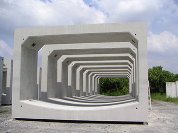
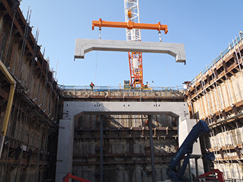
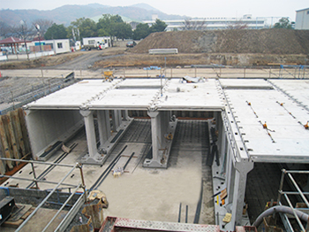

「ニーズに合った新しいコンクリート製品ｘ地元に根ざした活動で社会に貢献！！」
「コンクリート製品によって地域に貢献すること」
| 会社名 | 千葉窯業株式会社 |
|---|---|
| 所在地 | 〒260-0855 千葉県千葉市中央区市場町3-1 |
| 代表者 | 代表取締役 池田喜美夫 |
| 設立 | 大正10年（1921年）3月4日 |
| 資本金 | 9,946万円 |
| 従業員数 | 272名（令和6年4月） |
1. ボックスカルバート
説明：鉄筋コンクリート製の箱型構造物で、道路や鉄道の下を通る水路や地下通路などに使用

2. 超大型ボックス・橋梁
説明：主に中小規模の橋梁建設に適したプレキャストコンクリート製品

3. 雨水貯留浸透
説明：農業用水路や都市排水路などに使用されるプレキャストコンクリート製品

代表取締役社長
池田 喜美夫
1. 種類豊富な製品を製造
メイン10種類の製品を製造・新製品も続々とリリース
2. 数多くの大型案件を手掛ける 浦安市のテーマパークや外環道・空港の整備など大型の案件にも参加
3. 地域に根ざした仕事を生みだす 工場周辺地域のインフラ整備はもちろん、雇用も生みだすことで地域社会をもりあげる仕事を生みだす。